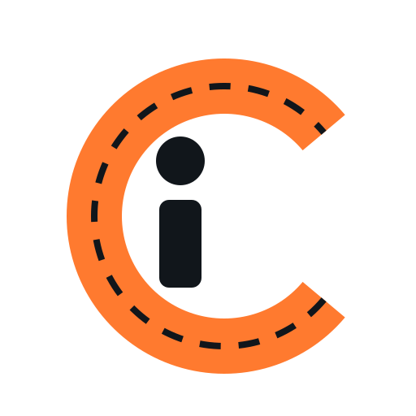
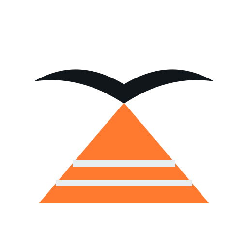
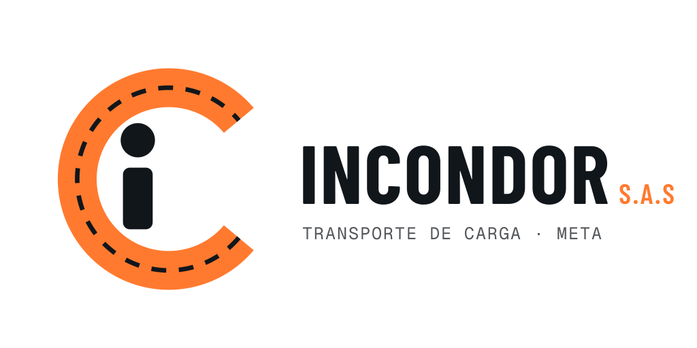
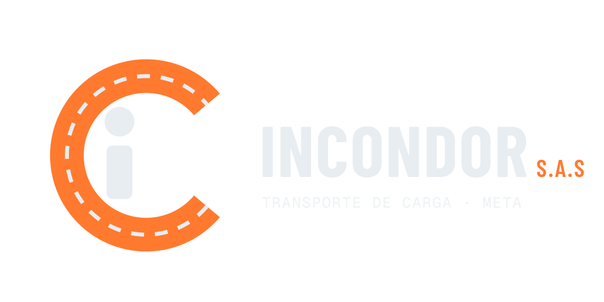
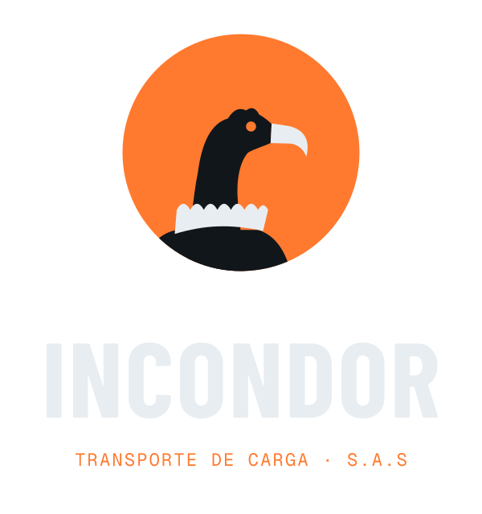
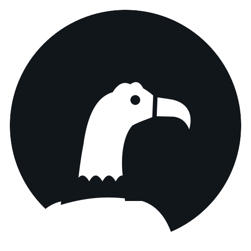
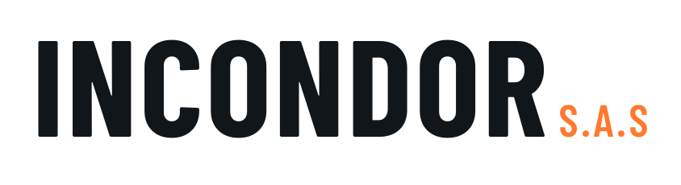

Logos: dos skills,
dos propuestas
Cada skill instalada hizo una propuesta de logo con su propio método. Las dos usan el lenguaje del sitio nuevo: carbón #11161b, naranja de marca #ff7a2f y Barlow Condensed en mayúsculas. Al final está la recomendación.

1 · logo-designer neonwatty
Método: entrevista, 3 conceptos distintos, elegir uno, iterar y exportar PNG de 16 a 2048 px.




2 · svg-logo-designer rknall
Método: un concepto con sistema completo (horizontal, vertical, icono, solo texto) en 4 versiones de color y guía de uso.



Guía de uso (skill 2)
- Espacio libre: alrededor del logo, deje como mínimo el alto de la cabeza del cóndor.
- Tamaño mínimo: 120 px de ancho para el horizontal y 24 px para el icono. En impresión, 3 cm.
- Color: sobre fondo claro, versión color. Sobre fondo oscuro, versión invertida. Para una sola tinta, versión monocromática.
- No hacer: no lo estire, no lo rote, no le ponga sombras ni cambie el naranja. Tampoco lo ponga sobre fotos con mucho detalle sin una franja de fondo.
Prueba de favicon
Tamaño real: 16, 32 y 48 px. Primero el IC (skill 1) y después el cóndor (skill 2).
Comparativa
| Criterio | 1 · IC vía | 2 · Cóndor emblema |
|---|---|---|
| Representa el nombre (“El Cóndor”) | Solo por las iniciales | Sí: el cóndor andino es el ave nacional |
| Dice “transporte” | Sí: la C es una vía | No por sí solo. Lo dice el lema. |
| Continuidad con el logo actual | Alta: mismo IC naranja | Baja: es una marca nueva |
| Encaja con la web (carbón + naranja) | Bien | Muy bien: el disco naranja resalta sobre el carbón |
| Legible a 16 px | Sí (se pierde la línea de la vía) | Regular: el collar desaparece |
| Recordación y diferenciación | Media: hay muchos monogramas con C | Alta: difícil de confundir |
| Entregables de la skill | 3 conceptos, 1 iteración, PNG de 16 a 2048 px | 16 SVG (4 layouts × 4 colores), PNG y guía de uso |
Gana el cóndor (skill 2 · svg-logo-designer)
Es el que mejor representa a Incondor. El nombre es “El Cóndor”, y el cóndor andino le da una identidad propia y regional. El disco naranja funciona sobre el fondo carbón del sitio nuevo. La skill además entregó el sistema completo: versiones, colores y guía de uso.
El IC (skill 1) es la opción segura si la gerencia quiere mantener el reconocimiento del logo actual. También es mejor favicon a 16 px. Se pueden combinar: el cóndor como marca principal y el IC como favicon.